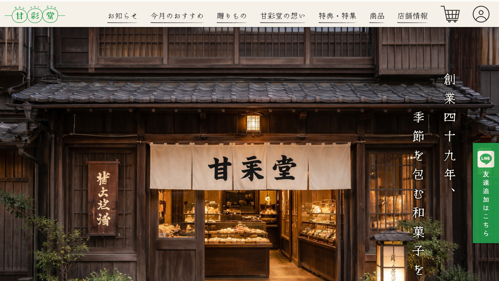

甘彩堂
石川県金沢市にある架空の和菓子屋を想定した、
ブランドサイト兼ECサイトです。
和菓子屋らしい落ち着きや親しみやすさを大切にしながら、
商品の魅力や店舗の想いが伝わるサイトを目指して制作しました。

課題
観光地に店舗を構える老舗和菓子屋として、店舗の魅力をオンラインでも伝え、
安定した購入につなげるための課題を整理しました。
観光客に売上が左右されやすい
金沢の観光地にある店舗として、来店数が観光シーズンに左右されやすく、
冬場などの閑散期には売上が不安定になる課題を設定しました。
オンライン販売の魅力が伝わりにくい
オンライン販売は行っているものの、商品写真やサイト全体の見せ方が弱く、
ブランドの世界観や商品の魅力が十分に伝わっていない状態を想定しました。
スマートフォンで選びにくい
商品情報や購入導線が整理されていないことで、
スマートフォンから閲覧したユーザーが迷わず商品を選びにくいという課題を設定しました。